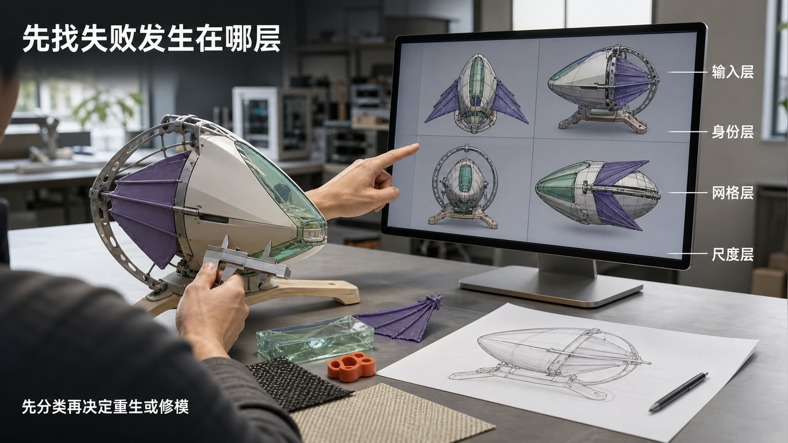
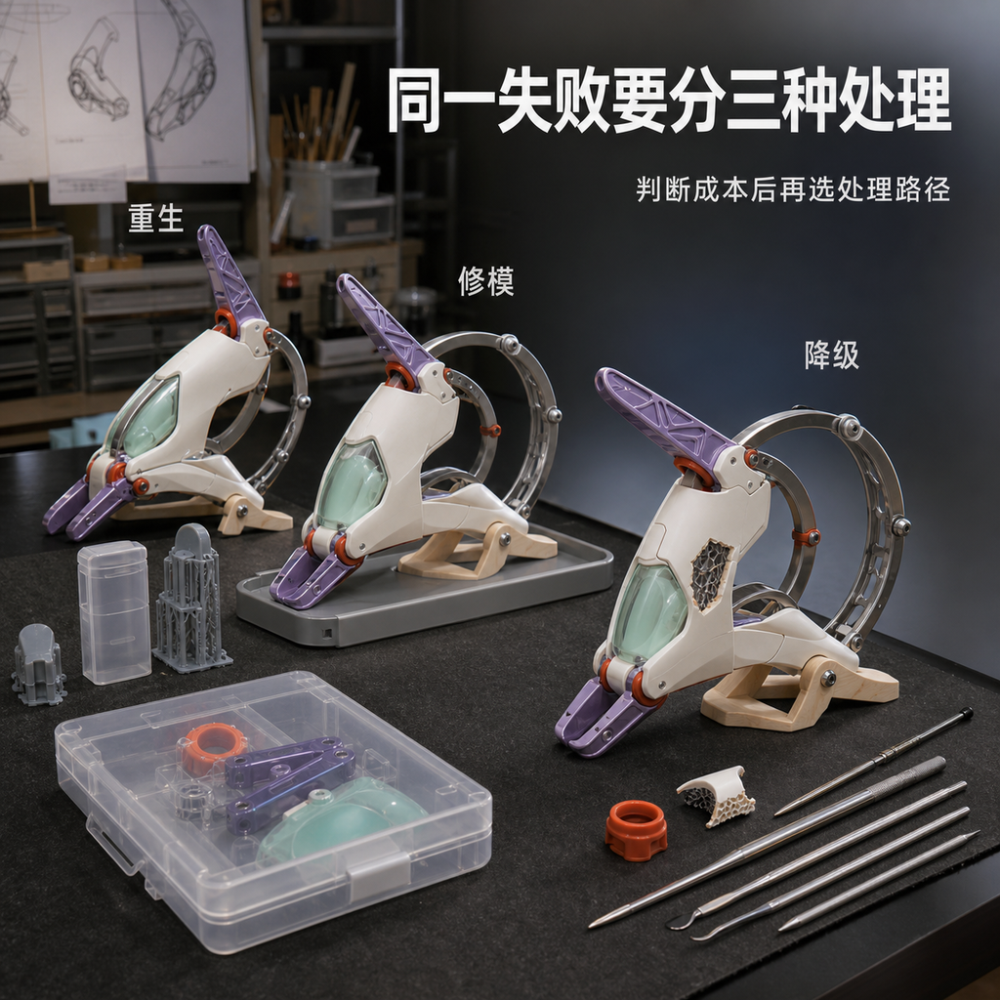
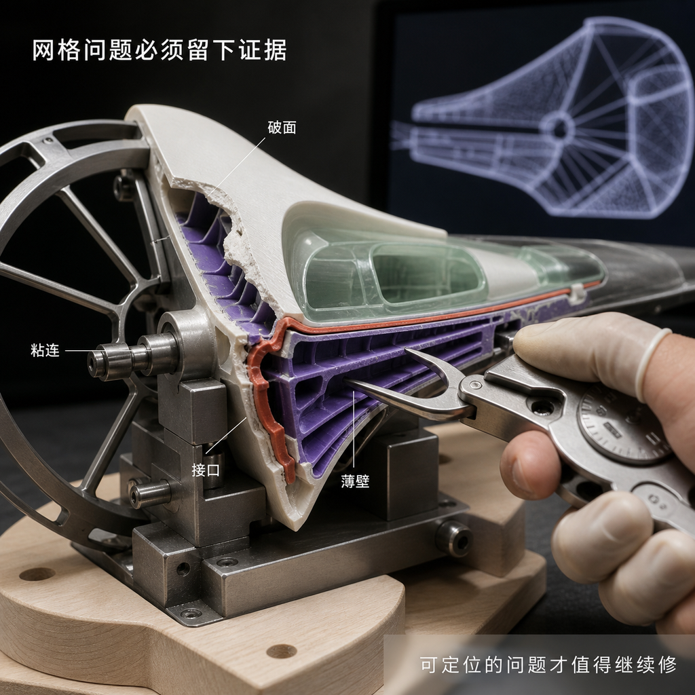
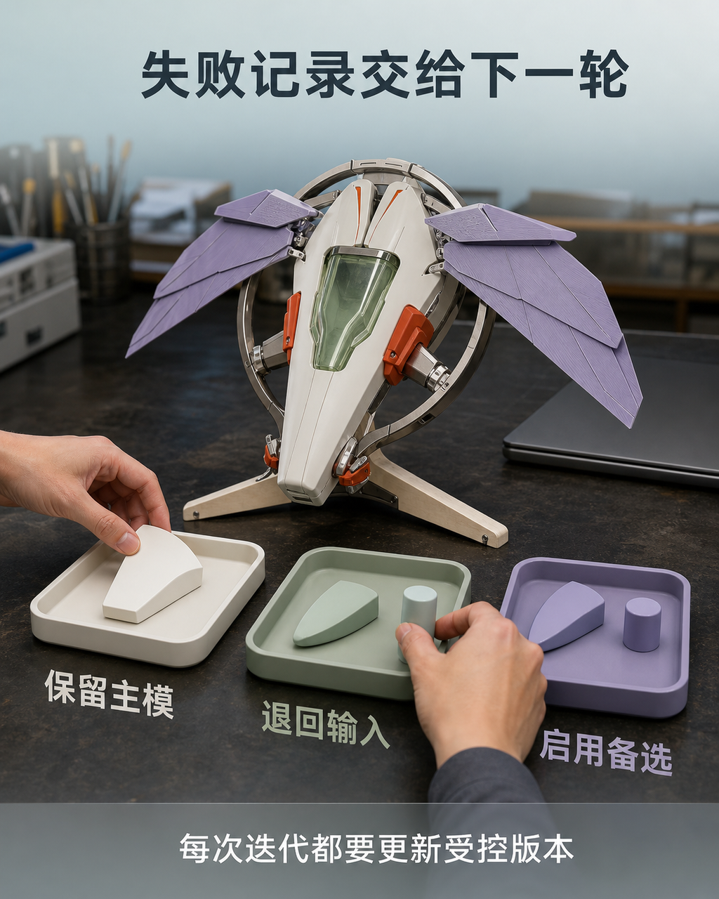

三维生成失败，通常不是因为你不会用工具
三维生成失败时，最直观的反应往往是继续换工具、改参数或重复生成。但失败可能发生在不同层：输入视图彼此冲突，目标尺寸与细节不匹配，生成结果偏离对象身份，或者网格出现破面、粘连、悬空和错误连接。若没有先定位层级，同一问题会在不同候选里反复出现。 这种反复不只消耗生成次数，还会干扰 Day 2 的版本判断。一个轮廓身份已经偏离的模型，不适合靠局部精修挽救；一个身份成立但存在有限网格问题的模型，也不必立即丢弃。把所有失败都归因于“不会用工具”，会让可修问题被重生、输入问题被修模，并把未经控制的版本带到拆件、导出和打印检查。

具体问题
三维生成失败时，最直观的反应往往是继续换工具、改参数或重复生成。但失败可能发生在不同层：输入视图彼此冲突，目标尺寸与细节不匹配，生成结果偏离对象身份，或者网格出现破面、粘连、悬空和错误连接。若没有先定位层级，同一问题会在不同候选里反复出现。
这种反复不只消耗生成次数，还会干扰 Day 2 的版本判断。一个轮廓身份已经偏离的模型，不适合靠局部精修挽救；一个身份成立但存在有限网格问题的模型，也不必立即丢弃。把所有失败都归因于“不会用工具”，会让可修问题被重生、输入问题被修模，并把未经控制的版本带到拆件、导出和打印检查。
核心判断
判断三维生成失败，先看失败属于输入层、身份层、结构层还是制造层。输入层检查正侧背、材质、尺寸与遮挡是否互相一致；身份层检查轮廓、比例、姿态和核心特征是否仍是同一对象；结构层检查网格封闭、重叠、薄片、接口与部件关系；制造层检查真实厚度、重心、支撑空间、拆件和装配是否成立。
处理方式应由失败层级和修正成本决定。输入冲突应退回受控输入，身份明显偏离应重选或重生候选，局部且可定位的网格问题进入 Nomad 人工修模，超出五天范围的结构则启用备选或降级方案。可继续的模型必须留下选择理由、问题清单和版本号，而不是只凭一次正面预览。
步骤或标准
可按以下六项完成一次失败诊断。每项都要形成可复核的视图、标记、数值或版本决定。
- 冻结比较条件：确认所有候选读取同一组 Gate 1 受控输入、同一目标尺寸和同一版本；若输入不同，先停止横向比较。
- 检查输入冲突：对齐正面、侧面、背面、底部与材质，标出比例、遮挡、连接或纹样解释不一致的位置；冲突未解决时退回补图。
- 检查对象身份：旋转查看整体轮廓、比例、姿态、主要负形和三至五个核心识别点；核心体块偏离且修正范围过大时更换候选。
- 检查网格证据：记录破面、重叠、粘连、悬空、薄壁、孔洞和错误部件关系的具体位置，并区分局部可修与全局重建。
- 比较处理成本：分别估算重生、人工修模和启用备选或降级方案会改变哪些结构、版本与时间；选择能在五天边界内留下可验证结果的路径。
- 更新 Gate 2 记录：为保留、退回或降级的决定写明模型版本、问题清单、修正动作与复检条件；只有身份、结构和制造预检均可复核才进入双文件导出。
常见错误
以下错误会把可定位的失败变成无边界的重复尝试。
- 连续换模型或参数，却不冻结同一组输入；后果是候选之间没有共同基准，无法判断变化来自工具还是输入漂移。
- 只看正面截图就判定模型可用；后果是侧背比例、底部孔洞、遮挡穿插和错误连接被留到修模或切片阶段集中暴露。
- 在身份已经偏离的模型上持续加细节；后果是时间投入错误体块，核心轮廓仍不成立，备选候选也失去评估窗口。
- 把所有网格问题都交给重新生成；后果是原本可局部修正的模型身份和版本被反复重置，修正证据无法积累。
- 没有记录失败位置、版本和处理理由；后果是相同问题在后续候选、GLB、STL 与打印任务中重复出现，Gate 2 无法复核。
与五天课程的关系
当天主题对应 Day 2“AI 三维初模与 Nomad 人工修模”以及 Gate 2。Day 1 / Gate 1 已经冻结对象、用途、尺寸、正侧背、材质、版权边界与主 / 备 / 降级范围；Day 2 要用这些共同条件诊断候选失败，区分退回输入、重选候选、人工修模或降级处理。
诊断与修正完成后，Gate 2 继续检查受控主模型、拆件方案、GLB、STL、真实厚度、连接、重心、装配和切片预检。Gate 2 通过才进入下一阶段 Day 3 的切片、首轮打印、灰模和 Gate 3 实体验证；未通过则留在 Day 2 更新模型与记录。
事实 / 案例 / 完成度边界
本文依据公开课程基线中的 Day 2、Gate 2 与 Day 3 交接要求整理。当天规划的四张“折潮测翼”图片只用于示意失败分类、候选比较、网格证据和版本交接，属于课程方向示意；它们不是学员案例、真实课堂、真实委托、已经发生的制作过程或完成成果。真实案例只有在来源、授权、输入版本、模型记录、切片与实物状态均可核验时才会单独标注，示意图不能替代真实案例。
五天内可以推进的是与项目范围匹配的第一版受控输入、可修改主模型、GLB、STL、拆件方案以及灰模或局部验证样，不保证每个失败都能在原模型上修复。完成度受输入成熟度、结构复杂度、尺寸、模型质量、设备、材料、打印排程与修正次数影响；课程不承诺一次生成可用、一次打印成功、商业级精修、固定实体件数、正式包装印刷、批量生产、正式展览、授权成交或销售结果。
报名入口
如果你已有 IP / 角色资产，可以在报名资料中说明现有原画、角色设定、三维文件或失败模型，版权状态、目标实体尺寸，以及目前遇到的身份、网格、拆件或打印问题。已有模型会先按受控输入和 Gate 2 标准复核，不默认可以直接制造。
如果你只有想法、草图或初步设定，也可以如实填写故事、关键词、希望做成的物品和现有设备，不需要先独自生成成熟三维模型。两类起点都会先在 Day 1 锁定输入，再于 Day 2 分类失败并建立可修改版本。公开报名地址：https://wj.qq.com/s2/27296919/9499/



长期招生｜青岛｜3–5 天短训｜评估后预约跟班｜每班最多 10 人。查看当前学习方案与费用
填写报名资料 →